Platform
01
macOS
Disk image (Universal)
Apple silicon and Intel Macs.
Standalone for macOSOther Zetica Sound files for macOS
01/Zetica Sound
Digital audio workstation · In development
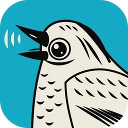
10SoundCraftDedicated Edit and Mix windows, multitrack audio and MIDI, ten inserts and sends per track, surround panning, and offline AudioSuite in a native DAW built from scratch.
macOS · Windows · Linux · Web · Free and open source
Screenshot

02/Highlights
Digital audio workstation
01
Dedicated Edit and Mix windows, Shuffle, Slip, Spot and Grid modes, comping playlists, memory locations, and single-key Commands Focus shortcuts.
02
Ten inserts and ten sends per track, busses, aux inputs, VCAs, routing folders, solo-in-place, and automatic plugin delay compensation.
03
Write, Touch, Latch and Trim automation passes recorded live for volume, pan, mutes, sends and every plugin parameter.
04
Built-in EQ, dynamic processors, reverbs, delays, modulation, synthesisers, plus support for loading external CLAP plugins.
05
Piano-roll MIDI editor with velocity lane, step input, quantize, transposition, score notation editor, and Audio-to-MIDI pitch detection.
06
Surround panning up to 9.1.6, live speaker rendering, and a dedicated picture track with video playback synchronized to the playhead.
03/Screenshots
Captured in Zetica Sound
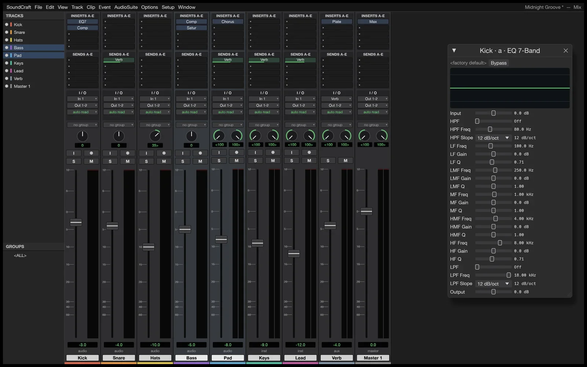
Full size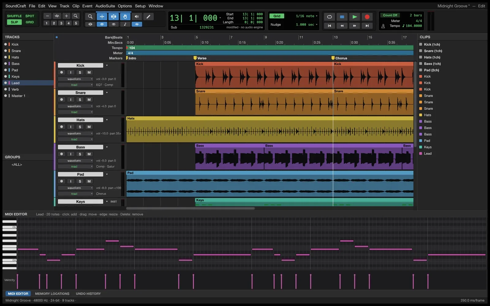
Full size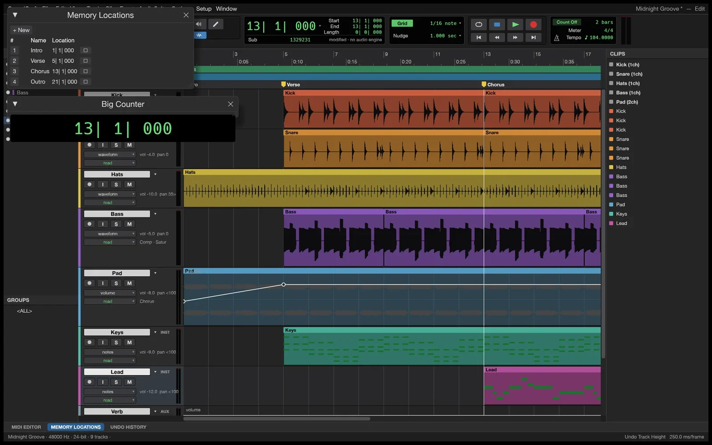
Full size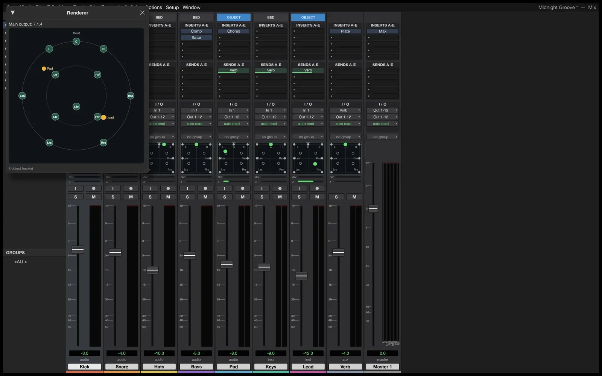
Full size04/Get Zetica Sound
Free · Open source
Option 1 · Recommended
Zetica Hub installs Zetica Sound and every other Crafting App from one place, picks the right build for your computer and keeps them all up to date. Install it once and every update is a click away.
Option 2 · Standalone
These installers add Zetica Sound on its own, without the launcher. Come back here for new versions, or install the launcher later and it will find Zetica Sound and keep it updated.
Platform
01
Disk image (Universal)
Apple silicon and Intel Macs.
Standalone for macOSOther Zetica Sound files for macOS
Your system
02
Installer (64-bit)
Most Windows 10 and 11 PCs.
Standalone for WindowsOther Zetica Sound files for Windows
Platform
03
Flatpak (x86_64)
Sandboxed. Install with flatpak install --user.
Standalone for LinuxOther Zetica Sound files for Linux
Release
Free for every platform above. Questions or feedback? The team is in the Zetica Discord.
Other downloads
Build from source
Needs Rust 1.90 or newer. New to Rust? Install it with rustup, then run:
git clone https://github.com/ZETIC7Z/soundcraft.git
cd soundcraft
cargo run --release -p soundcraft05/The family
Zetica Apps
Image editor

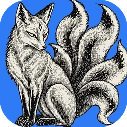
The open-source image editor you already know how to use.
Explore Zetica PhotoVector illustration

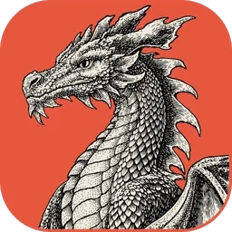
Fast, open-source vector illustration, reimagined in pure Rust.
Explore Zetica VectorVideo editor

Professional, open-source video editing, rebuilt from scratch in Rust.
Explore Zetica FilmPhoto library & raw developer

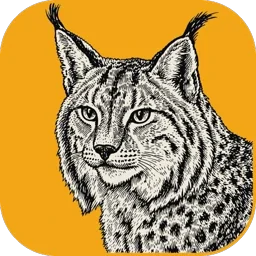
An open-source photo library and raw developer that runs on your machine.
Explore Zetica LightPDF workbench

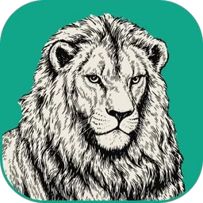
The open-source PDF workbench: read, organize, combine, split and secure.
Explore Zetica PDFMotion graphics & VFX

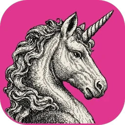
Open-source motion graphics and visual effects, built in pure Rust.
Explore Zetica MotionPage layout & publishing
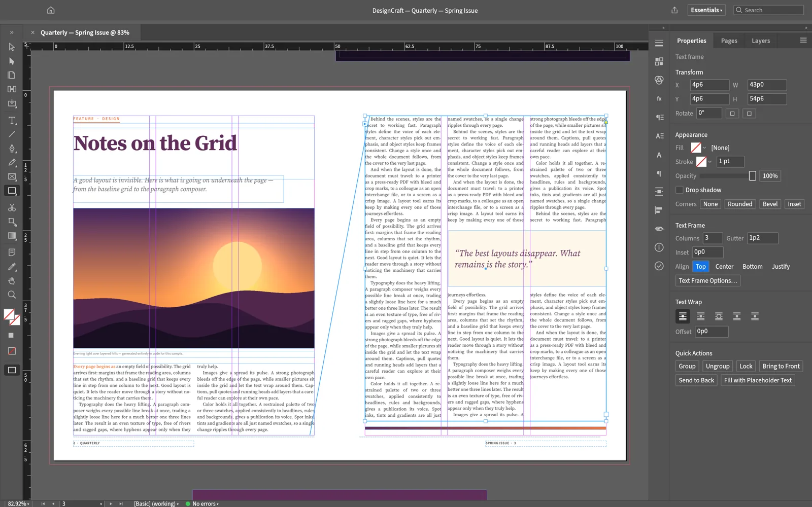
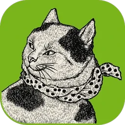
Open-source page layout and publishing, rebuilt in pure Rust.
Explore Zetica DesignInterface design
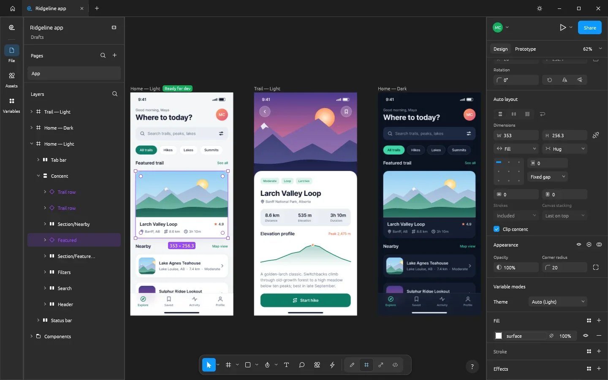
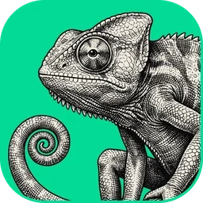
Open-source interface design and prototyping, rebuilt in pure Rust.
Explore Zetica FigWord processing
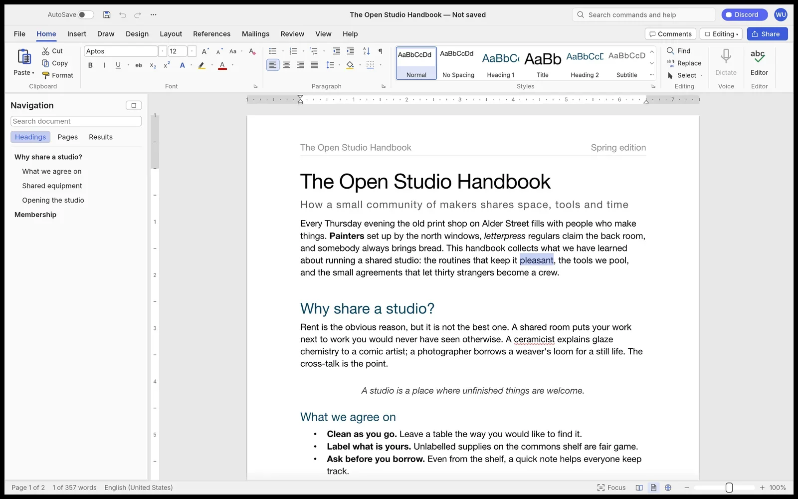
Fast, open-source word processing, rebuilt in pure Rust.
Explore Zetica WordPresentations & slide shows
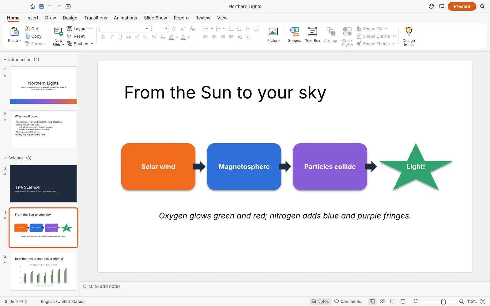
Build and deliver dynamic slide presentations, in pure Rust.
Explore Zetica DeckComputer-aided design & drafting
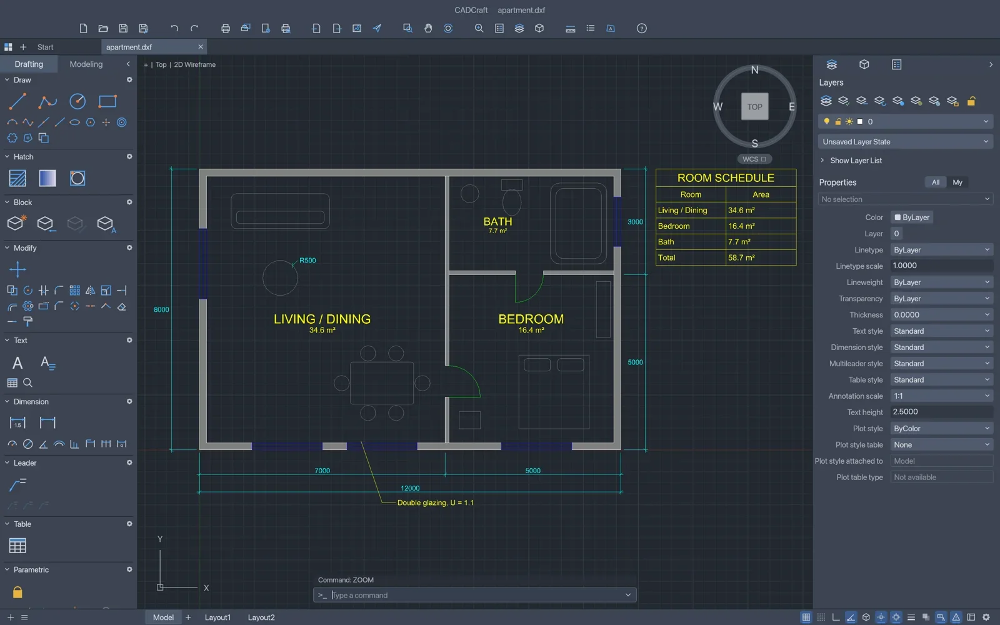
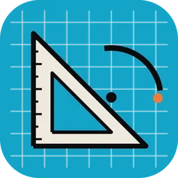
Fast, open-source computer-aided design and drafting in pure Rust.
Explore Zetica CADSpreadsheets & data analysis
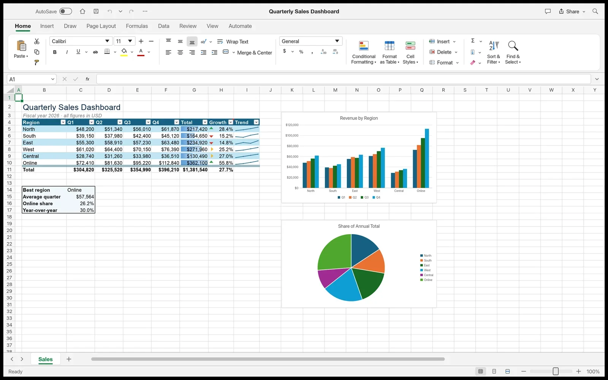
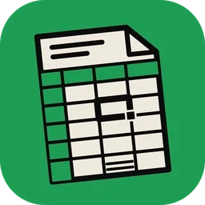
Fast, open-source spreadsheets and data analysis, rebuilt in pure Rust.
Explore Zetica GridOpen source · Free
Report bugs, request features and get early builds of Zetica Sound in the Zetica Discord.